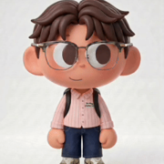

数字员工：小刚Claw
公司AI-Coding / AI-QA，帮研发和测试提效。这是探索者磨手艺的地方——也只有去过深处，才知道怎么把好处送到浅处。
研发和测试的流程里有大量重复劳动——AI 怎么真正进流程，而不只是停在聊天框里？
小刚Claw 的做法是 AI-Coding / AI-QA 双线并进，做真正的「数字员工」：有职责、有流程、能交付。
已经在公司内帮研发和测试提效——公司项目，讲了架构和效果，其余待解密。
让科技真的去解决普通人的生活问题，带来幸福——
而不是只服务于少数人的效率游戏。
致力于用科技解决的问题，与正在做的项目——点开看每一个的故事。
滚一滚，看我在探索什么 ↓
AI-Coding / AI-QA，帮研发和测试提效。这是探索者磨手艺的地方——也只有去过深处，才知道怎么把好处送到浅处。
研发和测试的流程里有大量重复劳动——AI 怎么真正进流程，而不只是停在聊天框里？
小刚Claw 的做法是 AI-Coding / AI-QA 双线并进，做真正的「数字员工」：有职责、有流程、能交付。
已经在公司内帮研发和测试提效——公司项目，讲了架构和效果，其余待解密。
从一个 idea，到全自动跑起来的 web 产品。把「造东西」的门槛拉到最低——另一种科技平权。
Hackathon 上的一道题：没有技术背景的人，怎么把一个 idea 变成能跑的产品？
crewless 的解法是——从 idea 输入开始，把需求拆解、生成、构建、部署全自动串成一条管线。
现场 demo 全程跑通，最后没获奖（难受），但整个过程值得完整记下来。
一群可爱的小狗大师，会算命，更会陪你。
人一焦虑就想要答案——但直接给答案的 App 很多，先把心接住、再把事讲清楚的很少。
卜灵里住着一群可爱的小狗大师，八字、六爻、梅花、灵水、筊杯样样都会：为你先进行排盘，同时用趣味的 K 线形式展现，再看着盘解读所有疑问；还能算合盘，看看你和 ta 的关系。
早上看运势，遇事起一卦，睡不着聊两句——总有一只小狗大师在。
手上有一段正在打磨的影像，也有两个还没收尾的小东西。
给那个开源小机器人换个灵魂——自己写表情、改语音、调动作。 硬件离生活最近，能摸到。
形象已经捏出来了，但表达还需要再进一步—— 从 AI 生图到 Blender 建模，再到视频漫剧，让 IP 活起来。

持续进化 ✦合上电脑之后——在路上，更多在独立页的 Life Log。
聊一聊正在做的事，或者任何「如果有个懂代码的人就好」的 idea。